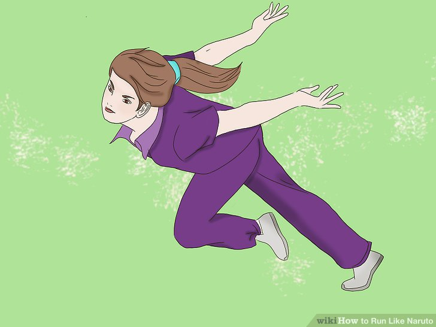

What We Are
AWC, also known as anti-weeb corporation, is an organization bent on cancelling out the negative impact of anime.Our Allies
We have quite a few allies/sponsers, however, here are notable allies/sponserers of ours

Yeah, our only allies that you would know of are Pink Guy and Papa Franku, but it's better than a lot of other corporations!
Basic Rules
If you would like to join us, you must first understand our basic principles
1. Watching anime is banned (Except for some exceptions, reveiwing it for your job/memeing purposes, to roast it, to show others how bad it is, and, the Pokemon VIDEO GAMES.)
2. No cosplaying as ANY anime characters
3. If you meet a weeabo, attempt to purify them, by ridding them of their anime
4. Anime games are allowed for reveiwing purposes and showing others how bad they are ONLY (Again, pokemon is the one exception.)
HOW TO IDENTIFY A WEEABO
1. Naruto Runing, it looks like the image below
2. Those weird cat ear things, we aren't even sure if this applys more to weeabos or furries
3. Any weird anime terms, such as 'senpai', 'oataku', or 'anime is good'
4. And, quite obviously, if they watch ANY anime